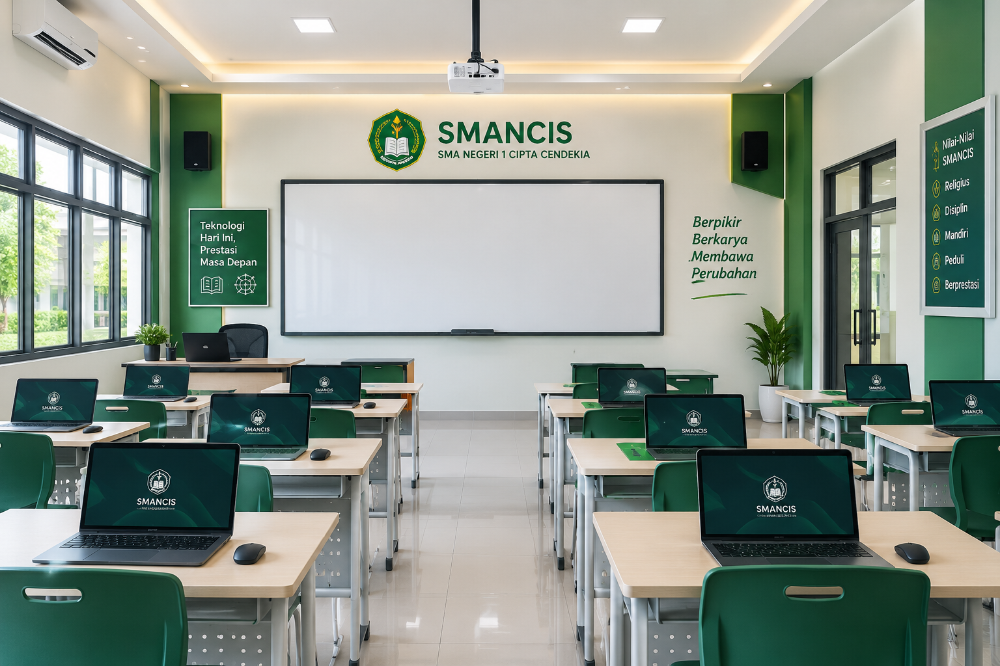

Ruang Kelas Digital
Ruang belajar yang mendukung kegiatan pembelajaran modern.
SMA Negeri 1 Cipta Cendekia (Smancis) adalah sekolah menengah atas yang berkomitmen mencetak generasi berprestasi dan berkarakter. Sekolah memadukan keunggulan akademik, pembentukan karakter luhur, dan adaptasi teknologi modern guna menghadapi tantangan global.
“Kami percaya setiap anak memiliki potensi terbaiknya. Di Smancis, kami tidak hanya mengajar, tetapi menginspirasi dan mengantarkan mimpi mereka menuju gerbang kesuksesan.”
— Kepala Sekolah SMAN 1 Cipta CendekiaInfrastruktur untuk mendukung proses belajar, kreativitas, dan pengembangan potensi siswa.

Ruang belajar yang mendukung kegiatan pembelajaran modern.

Mendukung literasi digital, coding, dan multimedia.

Ruang praktik dan eksperimen untuk pembelajaran sains.

Mendukung kebiasaan membaca dan eksplorasi pengetahuan.
Kegiatan ekstrakurikuler menjadi ruang untuk belajar, berkarya, dan bertumbuh bersama.
Melatih kedisiplinan, kepemimpinan, dan kerja sama.
Mengembangkan sportivitas, kebugaran, dan kekompakan.
Menjadi wadah untuk berkarya dan mengekspresikan kreativitas.
Informasi jadwal, persyaratan, dan proses pendaftaran dapat ditambahkan pada bagian ini.